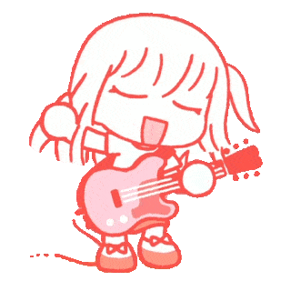

Ikuyo Kita
Nome artístico: Kita
Ikuyo Kita é a guitarrista rítmica e vocalista da Kessoku Band, uma pessoa cheia de energia, alegria e entusiasmo. Ela entrou na banda inicialmente por impulso, mas rapidamente se apaixonou pela dinâmica do grupo. Sua habilidade na guitarra e seu talento como vocalista são cruciais para o som característico da Kessoku Band.
Kita é conhecida por sua natureza extrovertida e cativante, sempre animando suas colegas com sua presença vibrante. Ela se junta à banda em um momento crucial, ajudando a criar o som que agora é identificado com a Kessoku Band. Ao lado de Ryo e Nijika, ela é uma das responsáveis por manter a banda coesa, tanto musicalmente quanto emocionalmente.
Como membro da banda, Kita tem seus próprios desafios pessoais, mas sempre tenta manter o moral alto para as outras integrantes. Ela é uma das maiores entusiastas das apresentações ao vivo e busca a melhor performance sempre. Sua energia e entusiasmo são os pilares que sustentam a banda, mesmo quando as coisas ficam complicadas.
O dia a dia de Kita na banda é uma mistura de diversão e trabalho árduo. Ela adora tocar e cantar, e sua amizade com Nijika, Ryo e Bocchi só cresce com o tempo. Sua presença é essencial para o espírito da Kessoku Band, e sua contribuição artística e emocional é o que faz o grupo se destacar.